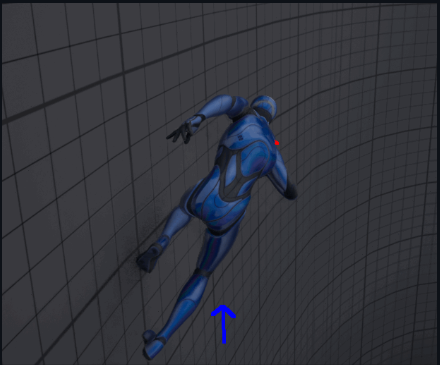
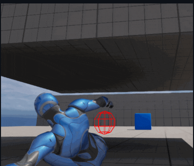
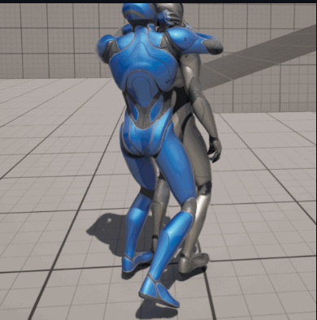
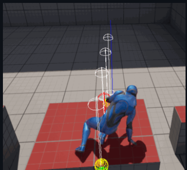

파쿠르와 암살 액션을 Ability 단위로 분리하고 Gameplay Tag로 상태, 입력, 발동 조건을 관리
개인 학습 / 기술 샘플
Unreal 캐릭터 액션 프로토타입
Lyra 샘플의 입력, 태그, Ability 흐름을 참고해 Unreal 캐릭터 액션 구조를 학습하고 재구성해 본 개인 기술 샘플. GAS, 루트 모션, 모션 워핑, 애니메이션 커브 보정 흐름을 확인하는 데 초점을 둔 작업
엔진 Unreal 5
구조 Gameplay Ability System
기간 약 1개월 반
링크 MotionPractice
루트 모션 기반 파쿠르 애니메이션에 Motion Warping을 연결해 장애물 위치에 맞춰 이동과 정렬 처리
엔진 기본 DistanceCurveModifier를 개량해 발 높이 커브를 추출하고 보정 데이터로 활용
액션 화면
파쿠르 이동, 슬라이딩 후 앉기 전환, 암살 액션, 모션 워핑 적용 상태를 확인할 수 있는 화면




구현 포인트
Ability 구성
Gameplay Ability System으로 파쿠르와 암살 액션을 캐릭터 Ability 단위로 분리하고, Gameplay Tag로 상태와 발동 조건을 관리
파쿠르 구현
Root Motion 기반 파쿠르 애니메이션에 Motion Warping을 연결해 장애물 위치에 맞는 이동과 정렬 처리
애니메이션 구조
Linked Layer로 캐릭터 교체와 애니메이션 레이어를 분리하고, 캐릭터 움직임 적용 구조를 구성
커브 보정
엔진 기본 DistanceCurveModifier를 개량해 애니메이션에서 발 높이 커브를 추출하고 보정 데이터로 활용
Lyra 참고
Lyra의 입력, 태그, Ability 흐름을 참고하되 학습용 샘플 구조에 맞춰 재구성